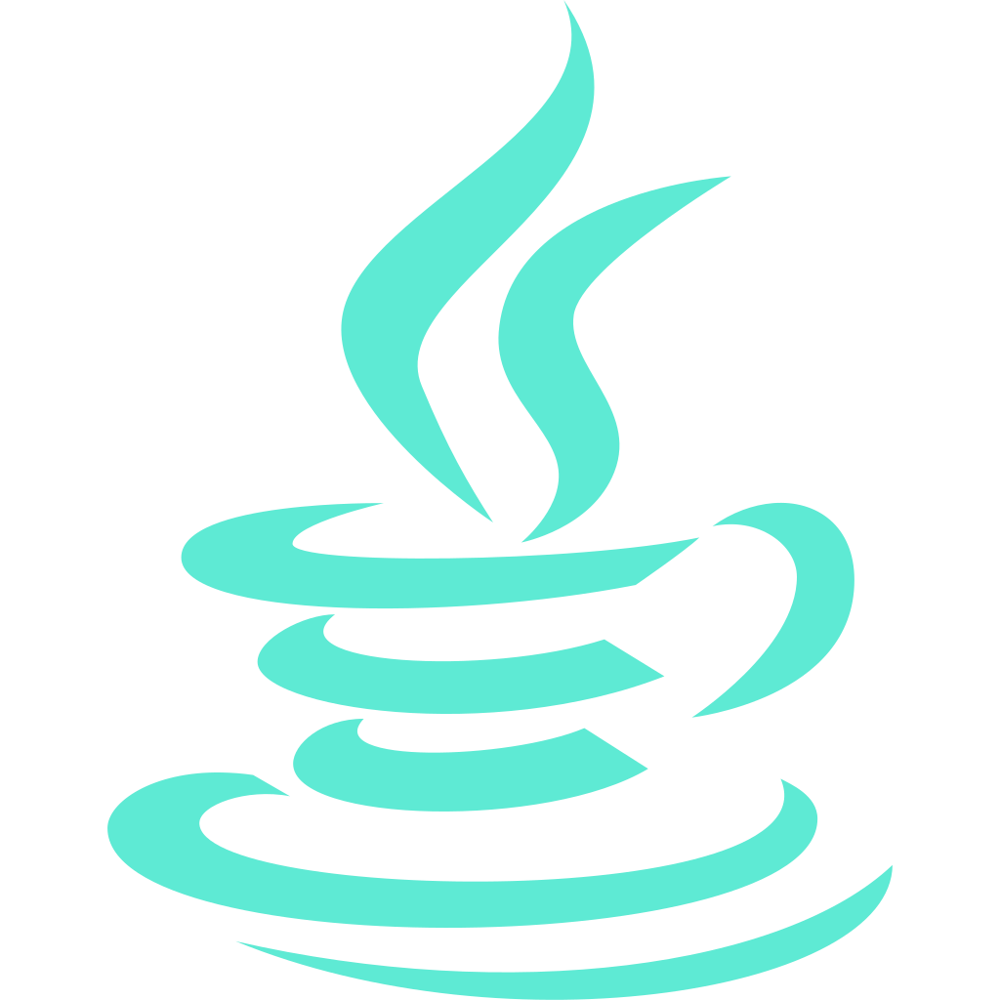
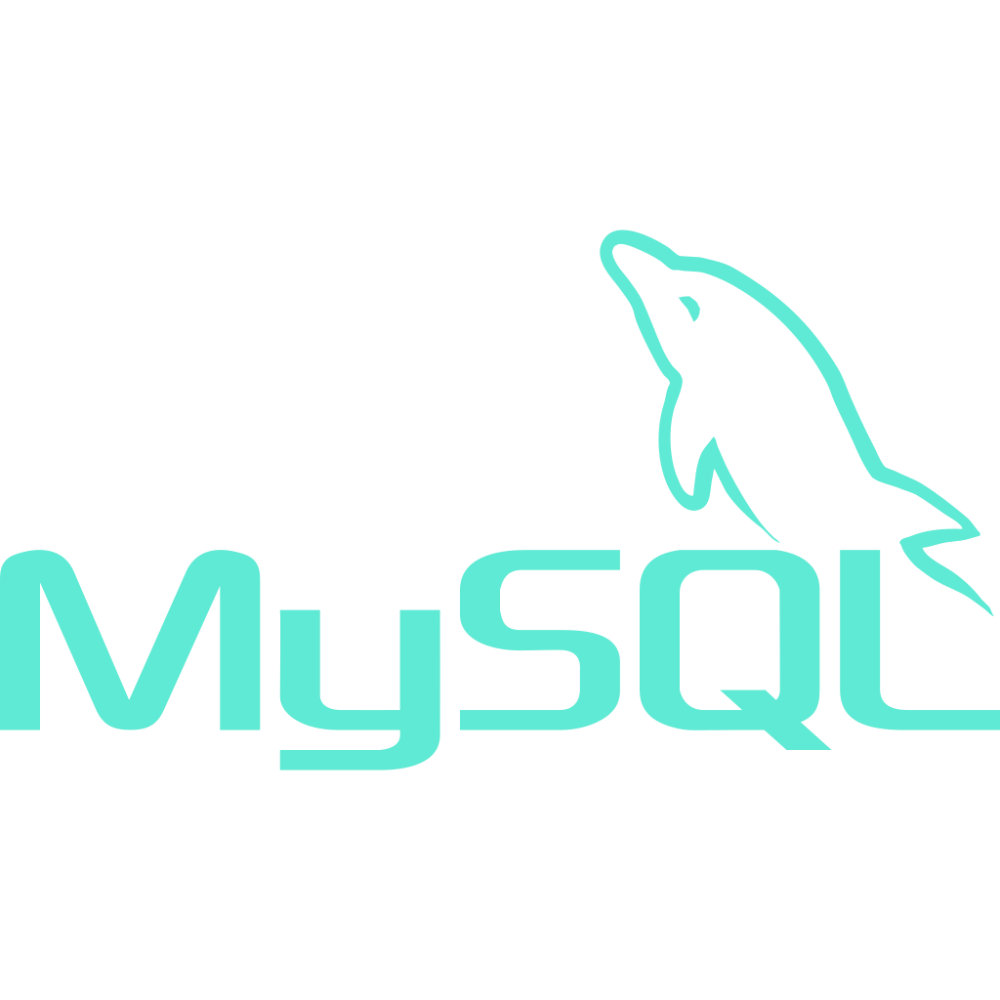
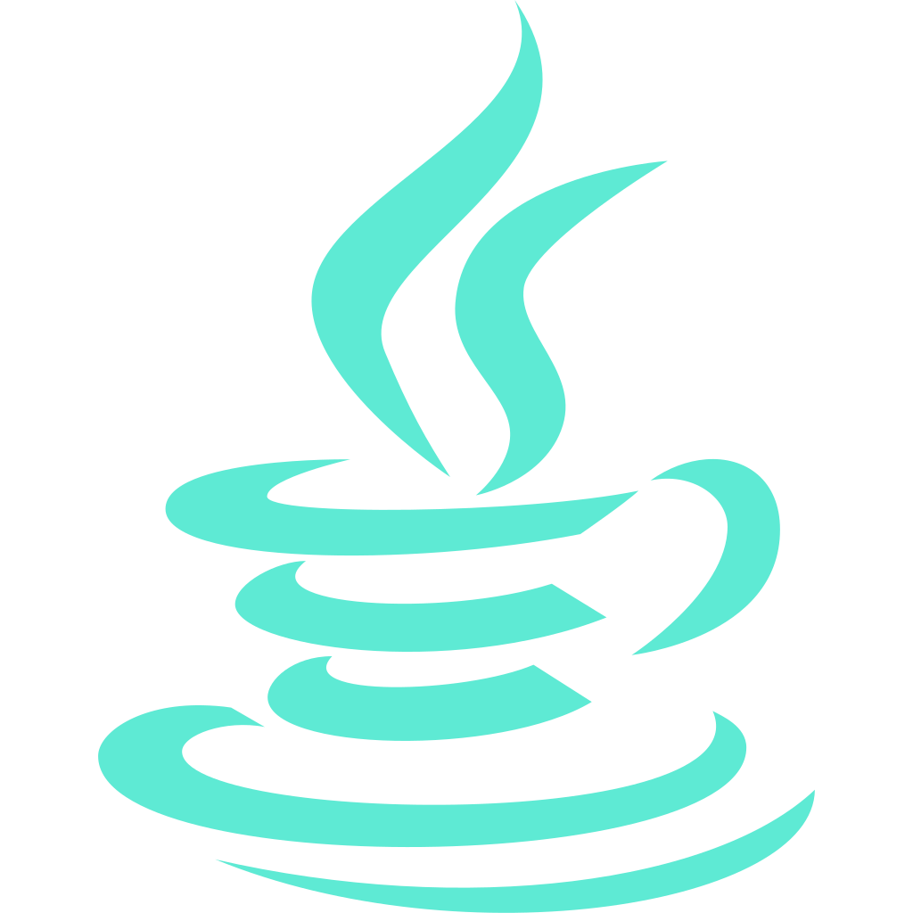
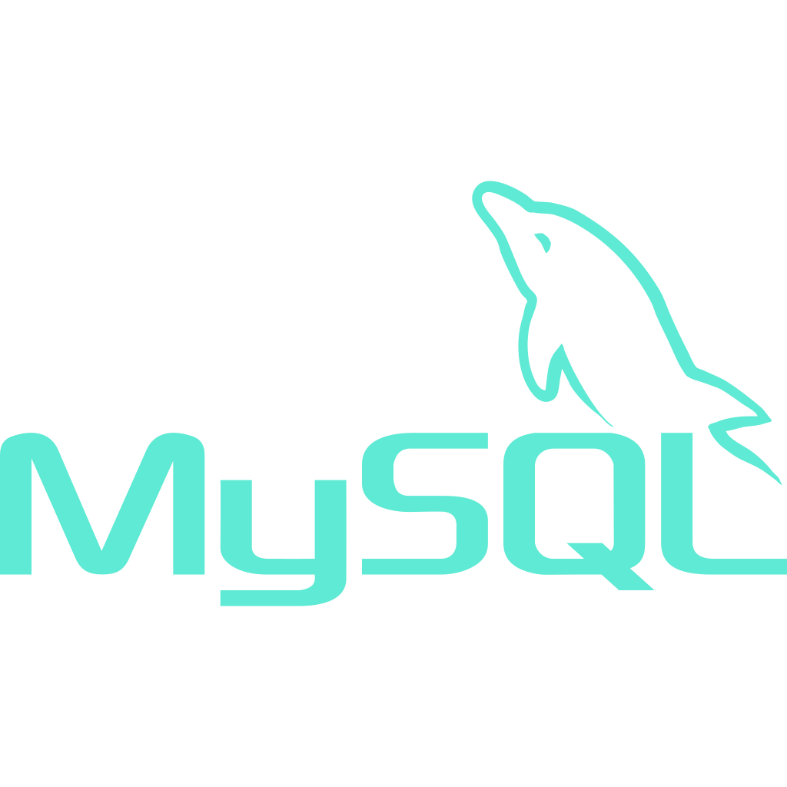

Currently, I’m honing my skills in full-stack development while working on projects that range from interactive web apps to database-driven systems. I thrive on learning new tools and technologies, and I enjoy exploring the intersection of creativity and logic to bring ideas to life.
In the past, I’ve had the opportunity to collaborate on diverse projects, from crafting an item recommendation system to designing solutions for global sustainability through an international internship. These experiences have strengthened my adaptability, problem-solving, and ability to think outside the box.
In my free time, you'll mostly find me playing basketball, boxing, reading, or just standing in lines to get some bubble tea. Hahah!
Nov '24 - Present
Information Technology Officer
DSCubed
As an IT Officer at the Data Science Student Club, I work on enhancing the club's IT systems by optimizing performance and resolving technical challenges. My responsibilities include troubleshooting issues, maintaining server infrastructure, and implementing cloud-based solutions to ensure seamless operations. I collaborate with a team to develop and deploy efficient technical solutions, gaining hands-on experience in system management and full-stack development. This role has allowed me to sharpen my problem-solving skills while contributing to the reliable functioning of the organization’s technical framework.
February 2024
Sustainability Micro Internship
Zaptec (Remote)
During my micro-internship with Zaptec, I collaborated with an international team to design and pitch green energy solutions. I contributed to developing app interfaces, creating content roadmaps, and presenting strategies to align with company goals. The experience honed my adaptability, teamwork, and creative problem-solving skills as I navigated cross-cultural collaboration. This internship allowed me to apply my technical knowledge to sustainability-focused projects while exploring innovative ways to promote green energy awareness.
Feb '24 - Oct '24
Marketing Officer
Google Student Developer Club
As the Marketing Officer for the Google Student Developer Club, I strategized and executed marketing campaigns to boost event attendance and community engagement. My role involved managing social media, and planning workshops that introduced students to emerging technologies. I worked closely with team members to align our campaigns with the club's goals, significantly increasing participation and awareness. This experience improved my communication, leadership, and organizational skills.
2022
Casual Python Tutor
India
In this role, I taught Python programming to high school students, focusing on building a strong foundation in coding principles. I designed lesson plans, developed coding exercises, and provided personalized support to ensure students understood key concepts. This position honed my ability to simplify complex topics and adapt my teaching approach to meet individual learning needs.
2024
Advanced 2-D Video Game
Project
Designed and developed an advanced video game using Java, incorporating object-oriented programming principles and design patterns. The game featured modular components and interactive gameplay mechanics, ensuring scalability and maintainability. Focused on creating an engaging user experience while optimizing the system for performance. This project improved my understanding of complex system design and reinforced my ability to implement reusable and scalable code structures.
2024
Item Recommendation System
Project
Developed an item recommendation system using Python and machine learning algorithms. The system analyzed user preferences and provided personalized suggestions based on similarity measures and data preprocessing techniques. This project deepened my understanding of machine learning models, algorithmic thinking, and working with large datasets.
2023
500-Digit Precise Calculator
Project
Created a precise calculator capable of performing arithmetic operations on numbers up to 500 digits long. Designed and implemented efficient algorithms to handle large numbers while ensuring accuracy and performance. This project tackled the limitations of standard floating-point calculations and showcased my ability to solve computational challenges with innovative solutions.